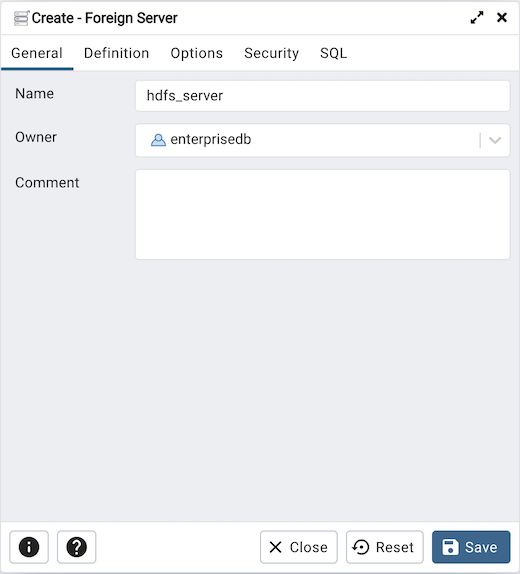
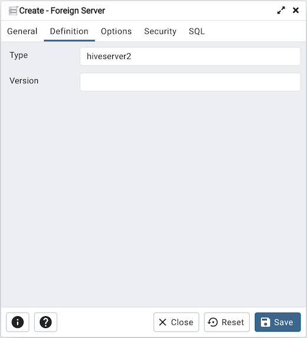
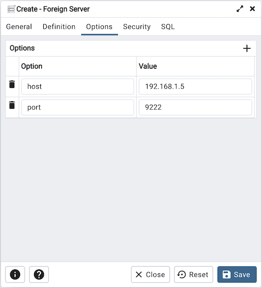
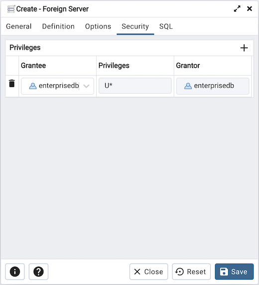
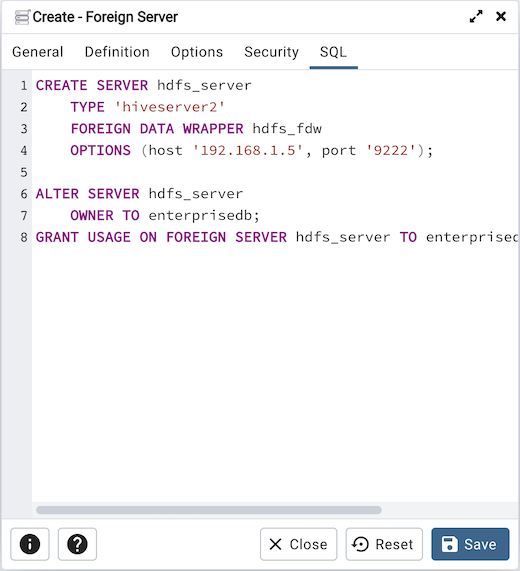

Foreign Server Dialog¶
Use the Foreign Server dialog to create a foreign server. A foreign server typically encapsulates connection information that a foreign-data wrapper uses to access an external data resource. Each foreign data wrapper may connect to a different foreign server; in the pgAdmin tree control, expand the node of the applicable foreign data wrapper to launch the Foreign Server dialog.
The Foreign Server dialog organizes the development of a foreign server through the following dialog tabs: General, Definition, Options, and Security. The SQL tab displays the SQL code generated by dialog selections.
Use the fields in the General tab to identify the foreign server:
Use the Name field to add a descriptive name for the foreign server. The name will be displayed in the pgAdmin tree control. It must be unique within the database.
Use the drop-down listbox next to Owner to select a role.
Store notes about the foreign server in the Comment field.
Click the Definition tab to continue.
Use the fields in the Definition tab to set parameters:
Use the Type field to specify a server type.
Use the Version field to specify a server version.
Click the Options tab to continue.
Use the fields in the Options tab to specify options. Click the Add button to create an option clause for the foreign server.
Specify the option name in the Option field.
Provide a corresponding value in the Value field.
Click Add to create each additional clause; to discard an option, click the trash icon to the left of the row and confirm deletion in the Delete Row popup.
Click the Security tab to continue.
Use the Security tab to assign security privileges to the foreign server. Click Add before you assign a set of privileges.
Select the name of the role from the drop-down listbox in the Grantee field.
Click inside the Privileges field. Check the boxes to the left of one or more privileges to grant the selected privileges to the specified user.
The current user, who is the default grantor for granting the privilege, is displayed in the Grantor field.
Click Add to assign a new set of privileges; to discard a privilege, click the trash icon to the left of the row and confirm deletion in the Delete Row dialog.
Click the SQL tab to continue.
Your entries in the Foreign Server dialog generate a SQL command (see an example below). Use the SQL tab for review; revisit or switch tabs to make any changes to the SQL command.
Example¶
The following is an example of the sql command generated by user selections in the Foreign Server dialog:
The example shown demonstrates creating a foreign server for the foreign data wrapper hdfs_fdw. It has the name hdfs_server; its type is hiveserver2. Options for the foreign server include a host and a port.
Click the Info button (i) to access online help.
Click the Save button to save work.
Click the Close button to exit without saving work.
Click the Reset button to restore configuration parameters.